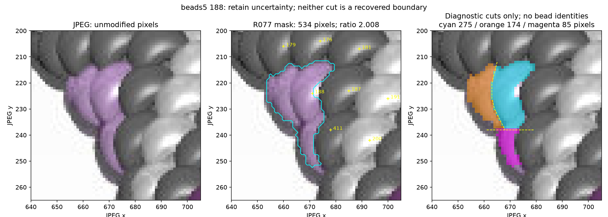
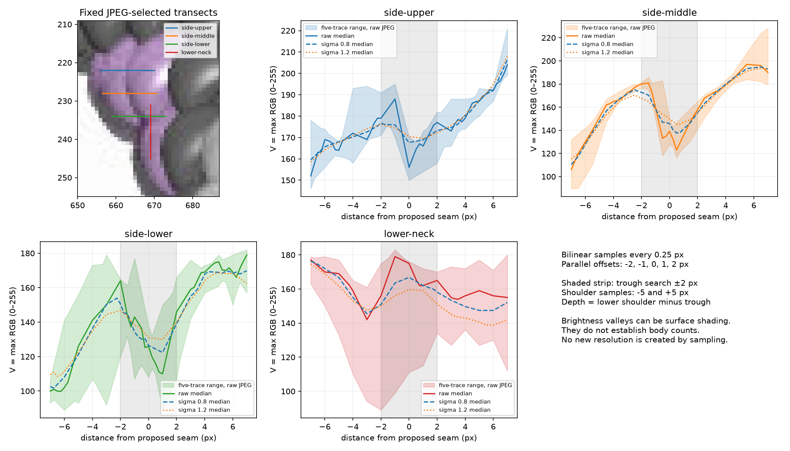
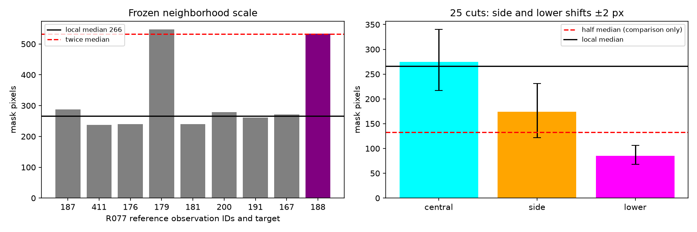

The side seam supports adjacent visible portions, but their count and usable body boundaries remain uncertain. The 328-observation active inventory is unchanged. Cuts below are measurements only.



Method and decision · Measurements · Profile samples · Hashes and parameters
No new maker question. Saved sliver guidance remains applied; older photo questions remain pending.